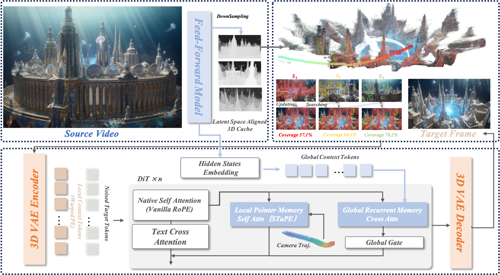

Global context
A frozen recurrent memory summarizes the scene beyond any single view.
Explore. Remember.
Revisit.
A world worth exploring.
A memory that brings you back.
* Corresponding author
When a camera returns, a video world model should recover what it has seen. But preserving historical features is only half the problem: an inaccurate geometric address can still send attention to the wrong place.
GLIMPSE preserves source patch content and regulates its positional address. Local patch memory supplies view-specific appearance, recurrent global memory provides scene context, and STaPE makes positional transport less sensitive to projection errors.
Three complementary pieces.
One geometry-aware memory interface.
A frozen recurrent memory summarizes the scene beyond any single view.
Footprint-guided retrieval selects original historical patches under a fixed local read budget.
STaPE couples band-wise coordinate precision with geometry-conditioned spectral attenuation.

High, middle, and low rotary bands use cell, half-cell, and continuous coordinates. Depth smoothness and temporal lag modulate the spatial frequency components of memory keys and values.
Original generation results.
Matched scenes, side-by-side playback.
GLIMPSE, UCM, ReWorld and SPMem. Original method labels and frame-aligned playback retained.
The Y-trajectory asks the final view to reuse complementary observations from different moments, rather than simply retrace a path.
Five complete generation pipelines. Selected qualitative examples, not a substitute for the controlled evaluations in the paper.
From quiet courtyards to unfamiliar worlds.
Move the camera. Keep the visual history.
Control overlays are derived from estimated camera poses. These are generated videos, not recordings of real environments.
Synchronized playback at half speed, as in the original demonstration.
@misc{xu2026glimpse,
title={GLIMPSE: Global--Local Indexing with Multi-Precision
Spectral Encoding for Explorable Video World Models},
author={Xu, Zhufeng and Lv, Henglei and Deng, Bailin and
Ding, Yikang and Liu, Xiaoqiang and Zhang, Guoxin and
Fu, Hongbo and Gao, Lin},
year={2026},
url={https://rabberk.github.io/glimpse-project/}
}This repository hosts the project website and demonstrations. Full research code and model weights are planned for release after acceptance.